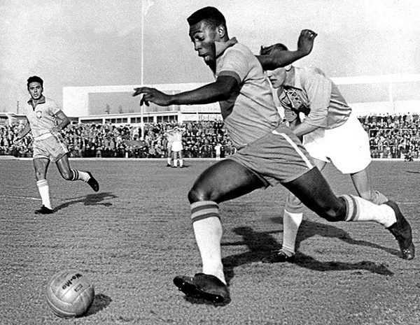
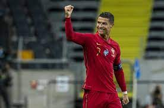

O futebol tem como principais atrativos o dinamismo, e os jogadores são quem executam essa função, e muitos deles entram para história primeiro por seu jeito de jogar, carisma, e seu jeito irreverente(no bom sentido) são eles que muitas vezes fazem o torcedor ir ver o jogo no estádio, comprar uma camisa com seu nome e por consequência os tornar fanáticos pelo esporte.
veja abaixo os principais jogadores do mundo:

Edson Arantes do Nascimento - (foto:Google)Mais conhecido como Pele é considerado o maior jogador de futebol que já existiu.o brasileiro foi campeão da copa do mundo aos 17 anoseste torneio três vezes pela seleção.Fora o seu imenso sucesso com a camisa do Santos, clube de São Paulo.

-Foto(Google) Cristiano o segundo maior artilheiro .do mundo, atrás apenas de Pelé, tem númerosincriveis em sua vitoriosa trajetória, o craque contacom mais de 730 gols na carreira e coleciona os mais diversos títulos.